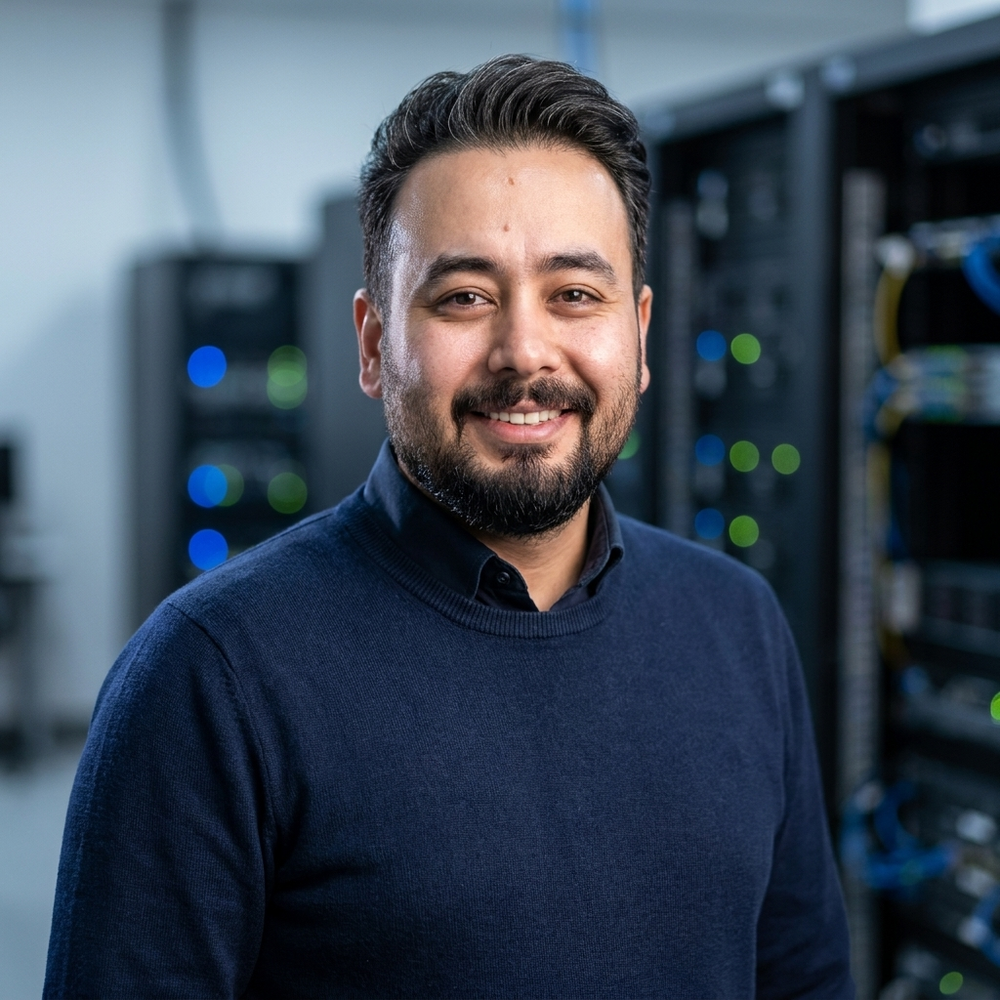

Infrastructure-first engineering.
My foundation is enterprise networking, systems, security, monitoring, virtualization, and R&D—so I approach AI as a production system, not an isolated API.
AI Infrastructure & LLM Platform Engineer
I build enterprise AI systems that go beyond chatbots—connecting LLM platforms, AI agents, automation, identity, security, and internal tools into production workflows.

01 / Profile
Over 12 years across enterprise infrastructure and R&D, with recent years focused on production AI, LLM platforms, private/local AI, and enterprise agents.
My foundation is enterprise networking, systems, security, monitoring, virtualization, and R&D—so I approach AI as a production system, not an isolated API.
I design private AI platforms, model access layers, gateways, RAG workflows, and operational controls for real organizations.
I build AI agents that connect to enterprise tools and APIs, automate workflows, and take controlled actions—not just answer questions.
02 / Experience
A career shaped by complex production environments—from banking R&D and multi-site infrastructure to private AI platforms, LLM gateways, enterprise agents, and automation.
June 2026 — Present
Current roleArtificial Intelligence Engineer
April 2025 — June 2026
Cryptocurrency exchange
AI Engineer / Network Engineer
December 2022 — March 2025
Network Engineer — Multi-Site Infrastructure
September 2015 — September 2022
R&D Engineer
03 / Selected work
Selected work showing how I turn LLMs and AI agents into secure enterprise platforms, integrations, and operational workflows.
Secure local AI infrastructure integrating open-source LLMs with controlled enterprise access and operational requirements.
An IT support agent integrated with Jira to assist users and automatically create structured support tickets from requests.
An Open WebUI-based AI platform providing organizational access to multiple language models and AI capabilities.
Read case study ↗An OpenAI-compatible LLM gateway with user attribution, token and cost accounting, budget policies, and streaming reliability.
Read case study ↗04 / Expertise
I work across the layers required to put AI into production: models, agents, APIs, data, infrastructure, identity, security, governance, and enterprise integrations.
Education
Jaber Bin Hayyan University · 2011–2013
Certifications
Networking, systems, cloud fundamentals, and virtualization.